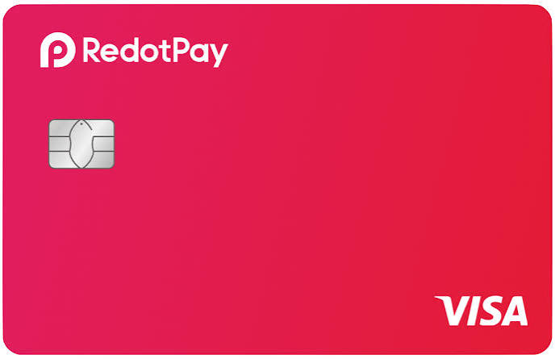
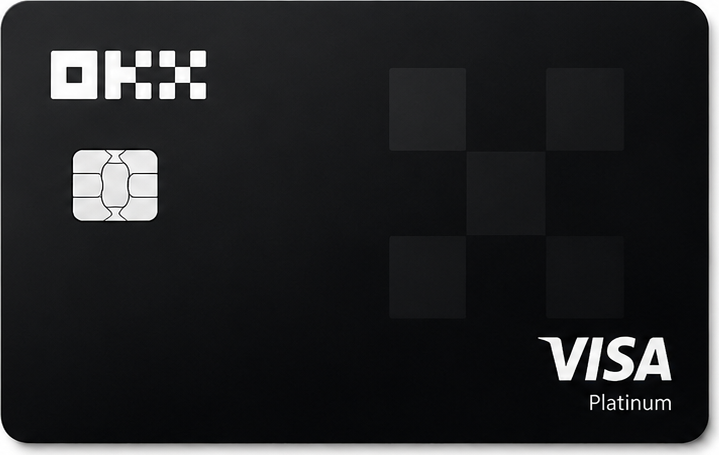
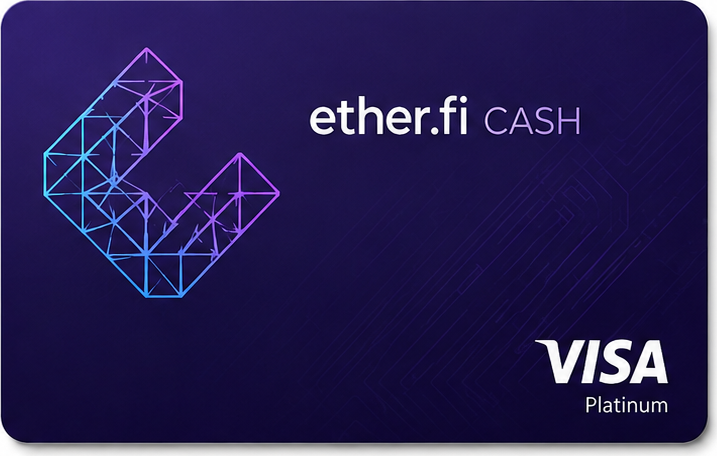
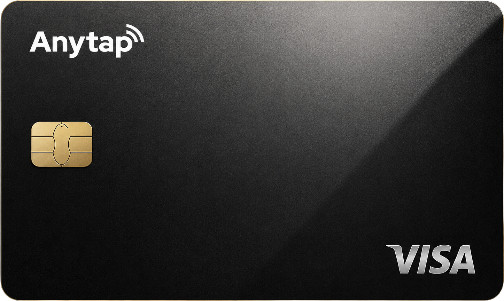

{{ page.h1 }}
{{ page.sub }}
{{ page.subPre }}{{ page.subRed }}{{ page.subPost }}
{{ page.lead }}
{{ page.leadRed }}
{{ page.stamp }}
{{ s.title }}
{{ s.sub }}
{{ para }}
{{ s.label }}
{{ para }}
{{ s.label }}
{{ s.big }}
{{ para }}




{{ c.name }}
{{ c.tag }}
{{ r.k }}
{{ r.v }}
{{ c.sum }}
| {{ h.t }} |
|---|
| {{ c.t }} |
{{ li.label }}
{{ s.legend }}
{{ note }}
{{ st.num }}
{{ st.t }}
{{ st.d }}
{{ i.n }}
{{ i.t }}
{{ i.d }}
{{ c.label }}
{{ c.t }}
{{ i }}
{{ c.note }}
{{ s.root }}
{{ b.q }}
{{ b.card }}
{{ b.d }}
{{ s.foot }}
{{ col.t }}
{{ st.t }}
{{ col.note }}
{{ i.t }}
{{ i.d }}
{{ f.n }}
{{ f.q }}
{{ f.a }}
{{ a.t }}
{{ para }}